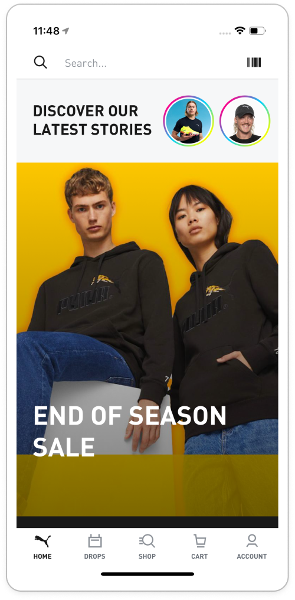

PUMA Shopping App

TL;DR
As Product UX Lead, I led design and product strategy for PUMA's first-ever D2C mobile shopping app — from concept through launch across five global markets (US, Canada, UK, India, Japan). Beyond design execution, I navigated real organizational risk: leadership was wary that a new mobile channel could destabilize the existing D2C business, which nearly delayed launch.
Impact
Launch Outcomes
6M total iOS downloads post-launch. 160% lift in e-commerce conversion rate vs. the legacy mobile site. +20% lift in average order value, driven largely by more items per order.
Project Background
Retrospective
In 2021 PUMA had no mobile app for D2C shoppers. It was not only a competitive disadvantage, this gap became urgent because pandemic-driven e-commerce growth pushed mobile traffic past 80% of total D2C traffic, while the mobile website's conversion lagged behind desktop due to site speed, lack of personalization and UX/UI issues.
Building the business case meant making the argument to leadership that this wasn't just a UX improvement, it was a lost revenue opportunity and a competitive gap vs. Nike, Adidas or any other competitor.
Goal
Conceptualize, design, and launch a high-converting, scalable, mobile-first shopping app for five key global markets.
Challenges
Each market had a materially different payment infrastructure and logistics constraints. Some senior stakeholders were wary about the launch fearing the shopping app will cannibalize the web site sales.
Role
Connecting UX and Business
As Product UX Lead, I owned the product and design strategy for the app from initial concept through launch and post-launch iteration, leading a team of 3 designers and 8 developers and partnering closely with marketing, data, and regional business leads across five markets.
Approach
Design and Development Workflow
We ran competitive analysis and user research (focus groups, interviews) across all five markets to surface both shared needs and market-specific ones. For example, "cash-on-delivery expectations in India" or "convenience-store payment preferences in Japan".
Process and Teams
We ran a lightweight agile process with short feedback loops across discovery, design, build, test, and continuous post-launch iteration. The real challenge was keeping that loop tight across five markets and multiple local teams. The app was designed and coded by a small dedicated team. Visual and UX design followed a continuous iteration model.
Trade-offs
The decision to limit stakeholder participation was deliberate. It helped speed-up time-to-market. To mitigate any risks, a "Big Bang" launch was replaced with staged released. The beta version first released internally to collect detailed feedback and prioritize the next design cycle.
Learnings
Reflection
Launching a first-ever mobile app carried real organizational fear — leadership was wary of a new channel destabilizing the existing D2C business, and that hesitation nearly delayed the launch. Rather than trying to argue the risk away, I proposed a structured round of internal testing and feedback before going public: getting the app in front of internal stakeholders first turned an abstract fear into a concrete, testable question, and the evidence from that round — not reassurances — is what actually earned the green light.
The second lesson was about stakeholder inclusion. Involving them early in the process would help reduce the amount of feedback and would make it easier to make the necessary fixes before the launch.